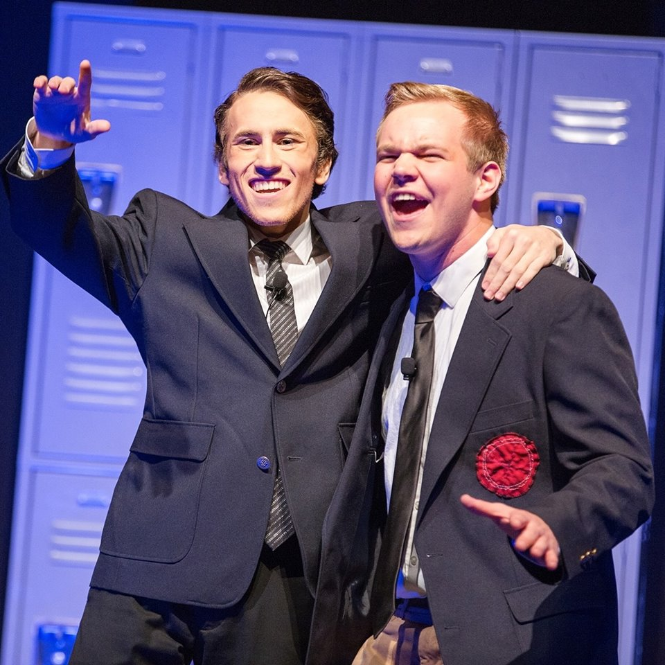
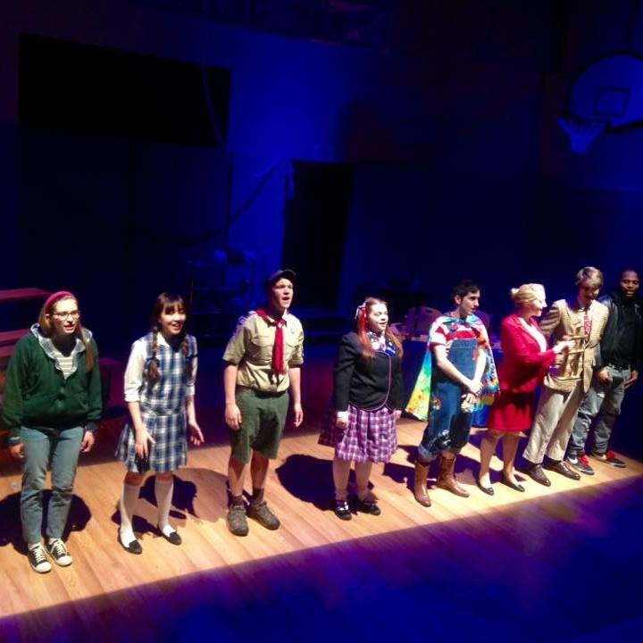

Lukas Kruegle
Theatre
From his first outing as The Wizard of Oz in elementary school, to his performance Frank Abagnale Jr. in "Catch Me If You Can" with NU Stage, to his return to elementary school as Chip Tolentino in Northeastern Theatre department's production of "25th Annual Putnam County Spelling Bee", Lukas has always loved Theatre. His passion for entertaining and telling stories has led him to perform in various plays and musicals. From his roles in the historical Docu-drama "The Laramie Project", to his punk debut as Johnny in "Green Day's American Idiot", Lukas is always looking for new avenues to work with his peers to create theatre, tell stories, and most of all, to entertain.


